Ember Woods · animation review
Production frames at their authored frame rates. GIFs loop for review, including one-shot death poses.
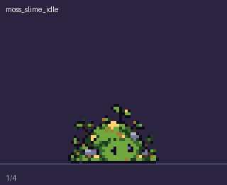
moss_slime_idle · 4 frames · 6 fps
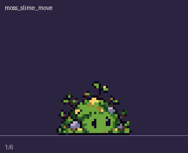
moss_slime_move · 6 frames · 8 fps
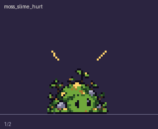
moss_slime_hurt · 2 frames · 10 fps
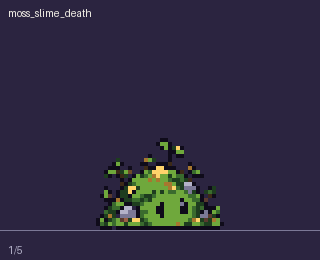
moss_slime_death · 5 frames · 12 fps
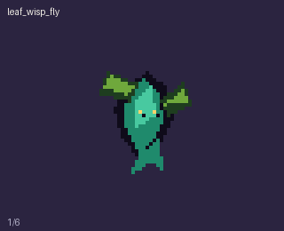
leaf_wisp_fly · 6 frames · 10 fps
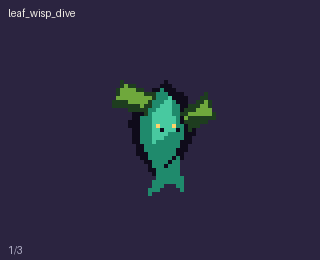
leaf_wisp_dive · 3 frames · 12 fps
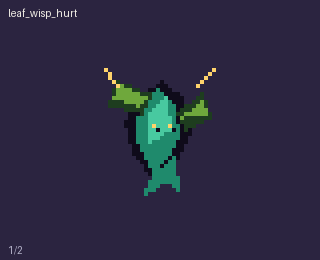
leaf_wisp_hurt · 2 frames · 10 fps
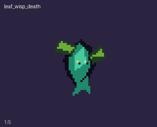
leaf_wisp_death · 5 frames · 12 fps
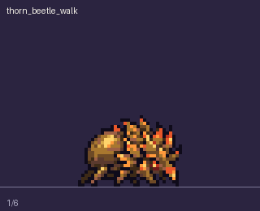
thorn_beetle_walk · 6 frames · 8 fps
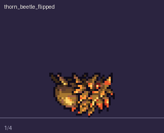
thorn_beetle_flipped · 4 frames · 8 fps
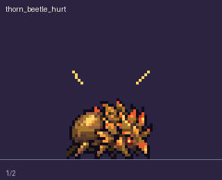
thorn_beetle_hurt · 2 frames · 10 fps
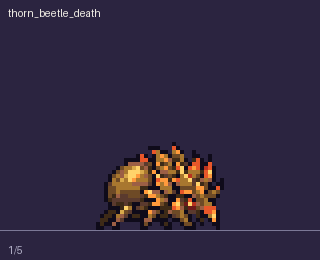
thorn_beetle_death · 5 frames · 12 fps
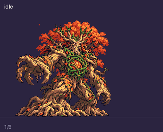
idle · 6 frames · 6 fps
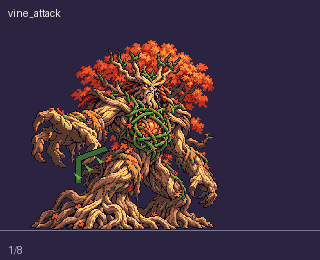
vine_attack · 8 frames · 12 fps
roar · 6 frames · 8 fps
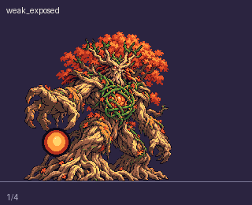
weak_exposed · 4 frames · 8 fps
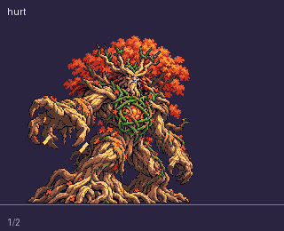
hurt · 2 frames · 10 fps
death · 10 frames · 10 fps
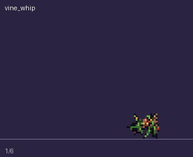
vine_whip · 6 frames · 12 fps
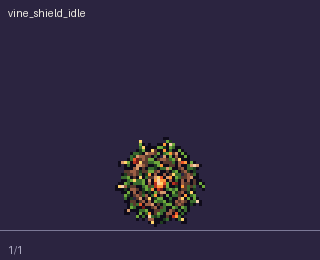
vine_shield_idle · 1 frames · 1 fps
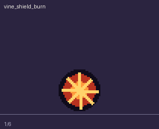
vine_shield_burn · 6 frames · 12 fps
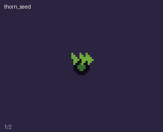
thorn_seed · 2 frames · 8 fps